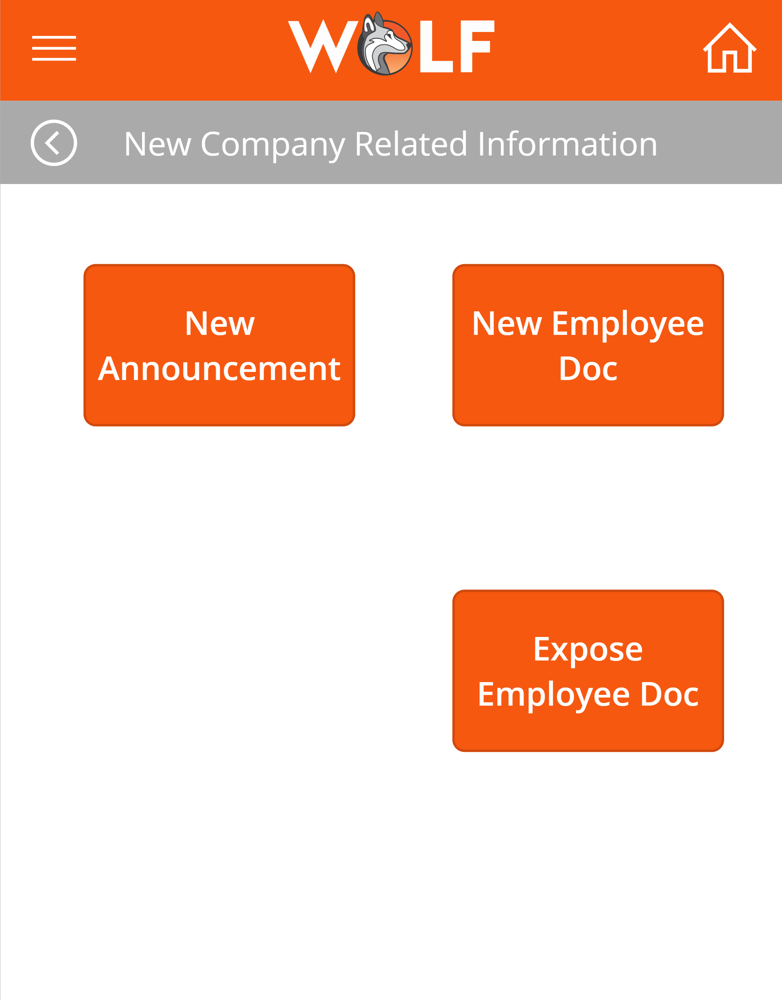
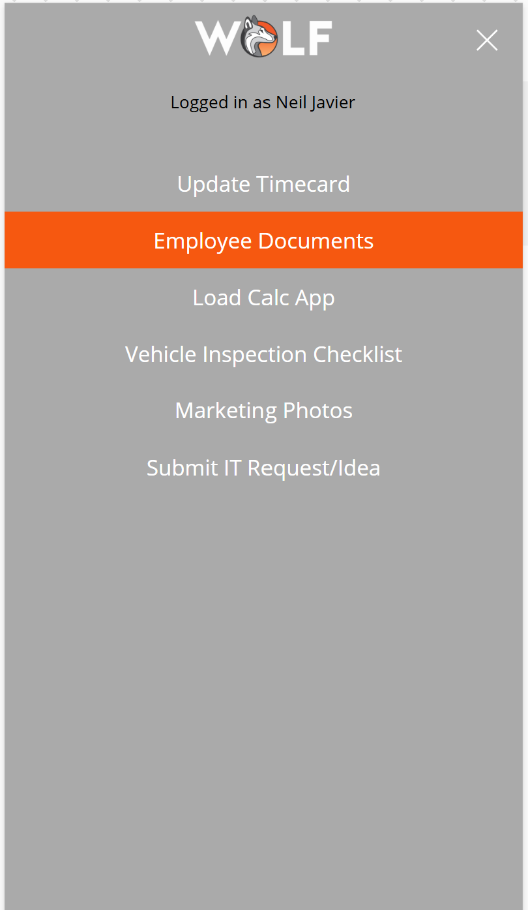
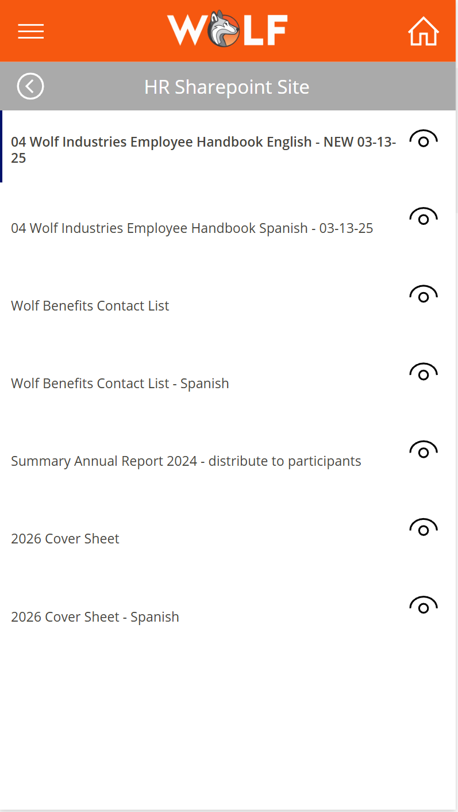
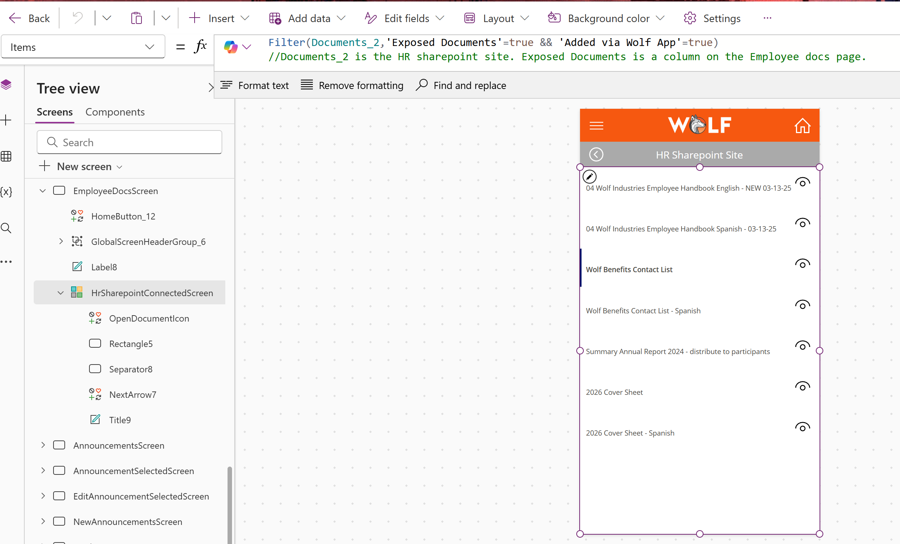
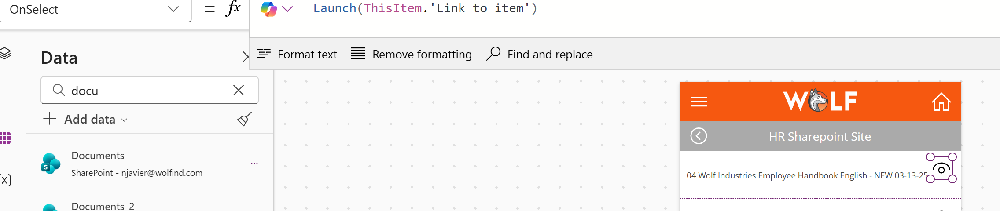

Company Announcements and Employee Documents
Project Summary
This Canvas app feature gives employees a centralized place to view company-wide announcements and employee documents. It helps the business share important updates, policy changes, benefit information, newsletters, forms, and employee-facing documents through a mobile-friendly Power Apps experience.
App Navigation
The Announcements tile is available from the main app home screen, giving employees quick access to company communication alongside other operational tools such as timecards, receipts, reimbursements, incidents, and IFTA logs.

Announcement Gallery
The announcements screen uses a gallery connected to the company announcements data source. Employees see announcement headlines in a clean list and can select the right arrow to open the full announcement details.

Announcement Details and Attachments
When an employee selects an announcement, the app opens a detail screen with the full message. If HR added an attachment, the employee can use the attachment button to open related files such as newsletters, healthcare documents, policy updates, or images.

Role-Based User Experience
The app includes customized visibility logic so only authorized users can see certain administrative controls. In this example, the announcement creation button is only visible to users with specific email addresses. This demonstrates how Power Fx can personalize the user experience and control access to admin-only actions.

Authorized Admin Actions
Authorized users can access a company-related information area with options to create a new announcement, upload a new employee document, or expose an existing employee document to the app. This gives HR or approved administrators a controlled way to publish information for employees without requiring changes to the app itself.

Employee Document Access
Employee documents are stored in a SharePoint document library and surfaced inside the Canvas app. Employees can access documents through announcements or through the Employee Documents section in the main app. These files can include PDFs such as blank W-9 forms, sign-up forms, benefits documents, handbook updates, or other HR resources.

SharePoint Document Gallery
The Employee Documents screen displays approved SharePoint files in a gallery. This gives employees a simple mobile-friendly list of available documents while keeping the actual files managed in SharePoint.

Filtered Document Visibility
The document gallery uses Power Fx to filter SharePoint files so only documents marked as exposed and added through the Wolf app are shown to employees. This helps prevent unfinished, private, or irrelevant files from appearing in the employee-facing app.

Document Launching
Employees can open a document directly from the app. The selected document link launches from the gallery item, allowing employees to view forms, PDFs, and other shared resources quickly from their device.

Business Impact
This feature improves internal communication by giving employees one reliable place to find important announcements and documents. It reduces scattered communication, helps HR distribute updates more consistently, and makes company information easier to access from a mobile device.
Skills Demonstrated
Canvas app design, SharePoint data integration, document library filtering, gallery configuration, sorting, navigation, attachment launching, Power Fx formulas, role-based visibility, admin-only controls, user experience customization, and employee communication workflows.